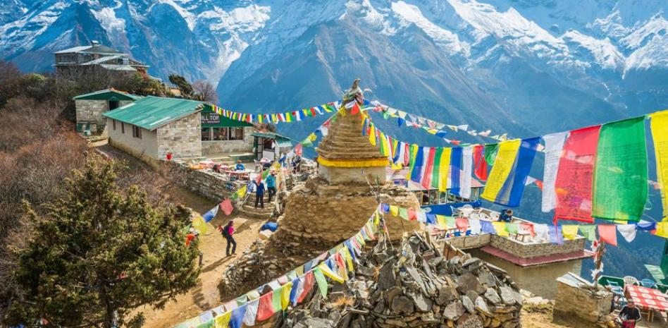

En este espacio dedicado a la geografía, te invitamos a embarcarte en un viaje fascinante por los rincones más increíbles de nuestro planeta. Desde las vastas llanuras hasta las cumbres nevadas de las montañas, desde las banderas más básicas hasta las más bonitas jamás diseñadas, aquí daremos un repaso por las pequeñas curiosidades que tiene este gran sitio llamado mundo.

Burma, Nepal